of JavaScript
by Elijah Manor / @elijahmanor
Who am i not?

Elijah Wood
Who I AM?
{
"name": "Elijah Manor",
"priorities" : [ "Christian", "Family", "Work" ],
"employer" : "Manorism, Inc.",
"title" : [ "Developer", "Trainer", "Pluralsight Author" ],
"tech" : [ "JavaScript", "jQuery", "HTML5", "CSS3" ],
"awards" : [
"Microsoft Regional Director",
"Microsoft ASP.NET MVP",
"ASPInsider",
"IE userAgent"
],
"blog": "http://elijahmanor.com",
"email": "elijah.manor@gmail.com",
"social": [ "@elijahmanor" ]
}History
→
History

Sad Birds

Happy Birds
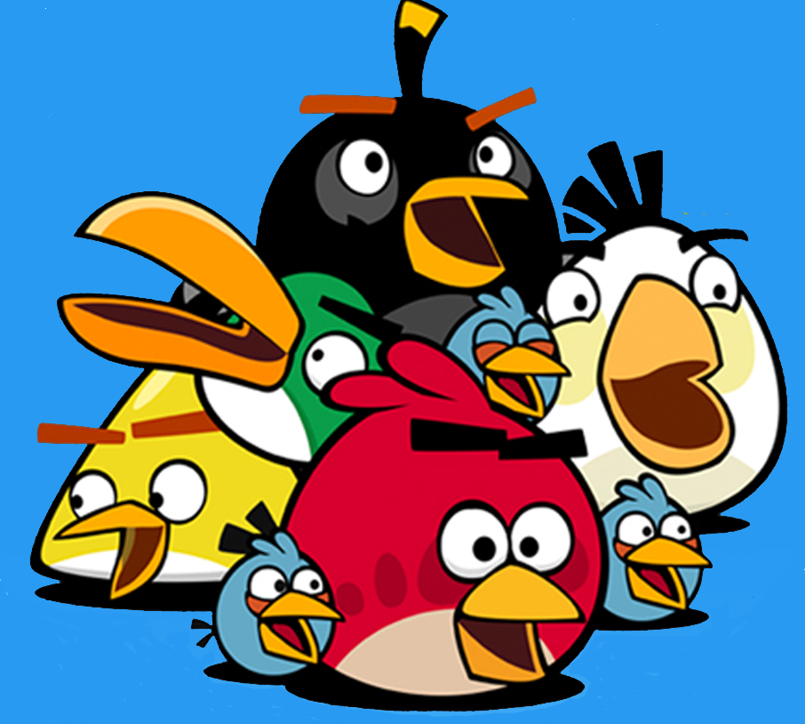
What Happened!?!
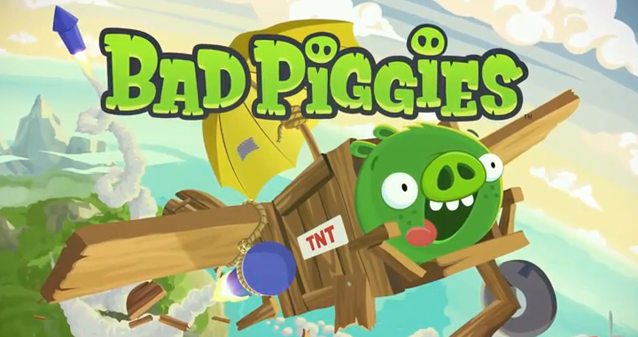
Super Hero Birds

Let's Meet Our Warrior Birds
→
Let's Meet Our Warrior Birds
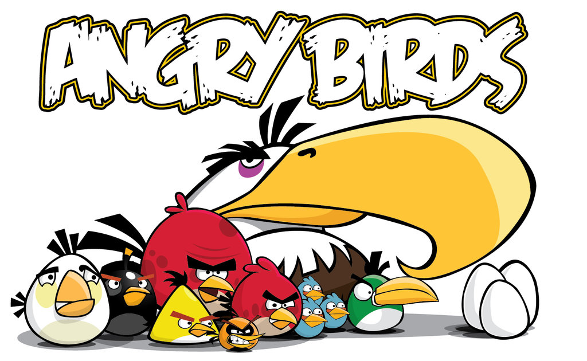
Red Bird
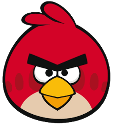
Attacks with the force of its trusty IIFE, the basic block of all privacy
Blue Bird
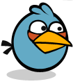
Triggers events and messages that scatter to infiltrate the pig's castle
Yellow Bird
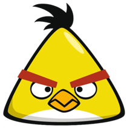
Comes with a RequireJS speed booster and dynamically injects scripts against those pesky swine
Black Bird
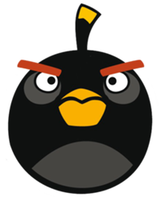
Proves to be a much more organized approach to fighting these porkers and introduces the Backbone.js bomb to their dismay
White Bird

Appears to be seemingly harmless, but when it pulls out it's strict coding style and bursts of quality checks the hogs are sure to squeal
Green Bird
Can reach all of those hard to reach places and will mock and spy those stealing swine right where it hurts!
Orange Bird

Starts out small with a simple template, but then expands itself into a DOM blast that will surely send the message that the birds mean business
Big Brother Bird
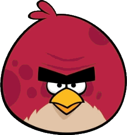
Pulls out the big guns with his finite state machine and other proven design patterns of destruction
Mighty Eagle

Uses the most superior weapon of them all, a suite of tools that can organize and deploy all the other birds into battle against their soon to be vanquished foe
ATTACK!
→
Red Bird
Attacks with the force of its trusty IIFE, the basic block of all privacy
What was Stolen by the Pigs?
For ages the birds used to litter the global namespace with their custom objects and functions. Over time the birds slowly learned techniques to protect their objects from the global namespace.
How Objects Become Global?
1. Declaring an Object in the Window Scope
var type = "Red",
attack = function() {
console.log( type + " Bird Attacks!" );
};
console.log( window.type ); // I'm a global variable
console.log( window.attack ); // I'm a global function
How Objects Become Global?
2. Not Declaring an Object in Any Scope
var type = "Red",
attack = function() {
typeOfBird = type + " Bird";
console.log( birdType + " Bird Attacks!" );
};
console.log( window.type ); // I'm a global variable
console.log( window.attack ); // I'm a global function
console.log( window.typeOfBird ); // I'm a global variable too :(
How Objects Become Global?
3. Specifically Adding an Object to the Window
var type = "Red",
attack = function() {
typeOfBird = type + " Bird";
window.message = typeOfBird + " Attacks!";
console.log( birdType + " Bird Attacks!" );
};
console.log( window.type ); // I'm a global variable
console.log( window.attack ); // I'm a global function
console.log( window.typeOfBird ); // I'm a global variable too :(
console.log( window.message ); // I'm a global variable too :|
Why are Global Objects a Problem?
- Conflicts within Your Code
- Conflicts with Your Code and Third-Party Libraries
- Conflicts with Your Code and Browser Add-ons/Extensions/Plugins
Various Ways to Protect Yourself
Object Literal
// Gather type & attack and make properties off higher level object
var bird = {
type: "Red",
attack: function() {
console.log( this.type + " Bird Attacks!" );
}
};
console.log( window.bird ); // Only 1 global object!
console.log( window.bird.type ); // Red
console.log( window.bird.attack() ); // Red Bird Attacks!
Various Ways to Protect Yourself
Immediately Invoked Function Expression (IIFE)
// JavaScript can parse this just fine now, yay!
(function() {
// All memory is contained within this scope
}()); // <-- Immediately Invoked
Various Ways to Protect Yourself
Immediately Invoked Function Expression (IIFE)
// Revealing Module Pattern
var bird = (function() {
var type = "Red",
power = "IIFE", // This is private
attack = function() {
console.log(type + " Bird Attacks with " + power + "!");
};
// Only the items returned are public
return { type: type, attack: attack };
}());
console.log( window.bird ); // Only 1 global object!
console.log( window.bird.type ); // Public property
console.log( window.bird.attack() ); // Public method access private
console.log( window.bird.power ); // Private var, can't access
Various Ways to Protect Yourself
Immediately Invoked Function Expression (IIFE)
(function( bird ) {
var power = "IIFE"; // This is private
bird.type = "Red";
bird.attack = function() {
console.log( bird.type + " Bird Attacks with " + power + "!" );
};
}( window.bird = window.bird || {} ));
console.log( window.bird ); // Only 1 global object!
console.log( window.bird.type ); // Public property
console.log( window.bird.attack() ); // Public method accessing private
console.log( window.bird.power ); // Private variable, can't access
Blue Bird
Triggers events and messages that scatter to infiltrate the pig's castle
What was Stolen by the Pigs?
The birds used to build their web applications with components having hard dependencies on each-other. They eventually started to learn to reduce tight coupling by introducing events and messages.
Sample Application
Tightly Coupled Code
$( document ).on( "click", ".term", function( e ) {
$( "input" ).val( $( this ).text() );
$( "button" ).trigger( "click" );
});
$( "button" ).on( "click", function( e ) {
var searchTerm = $( "input" ).val(),
url = "http://odata.netflix.com/Catalog/Titles?$filter=substringof('" +
escape( searchTerm ) + "',Name)&$callback=callback&$format=json";
$( ".help-block" ).html( function( index, html ) {
return e.originalEvent ?
html + ", " + "<a href='#' class='term'>" + searchTerm + "</a>" : html;
});
$.ajax({
dataType: "jsonp",
url: url,
jsonpCallback: "callback",
success: function( data ) {
var rows = [];
$.each( data.d.results, function( index, result ) {
var row = "";
if ( result.Rating && result.ReleaseYear ) {
row += "" + result.Name + " ";
row += "" + result.Rating + " ";
row += "" + result.ReleaseYear + " ";
row = "" + row + " ";
rows.push( row );
}
});
$( "table" ).show().find( "tbody" ).html( rows.join( "" ) );
}
});
});
TYPES OF MESSAGES: Observer Events
- You can think of this as adding event handlers to an element
- The element has a direct reference to the callbacks that will be invoked when the event type occurs
TYPES OF MESSAGES: Observer Events
document.getElementById( "bird" )
// Native addEventListener attaches observer to the DOM element
.addEventListener( "click", function() { console.log( "Catapult!" ); }, false );
$( "#bird" )
// Old school event helpers attaches observer to the DOM element
.click( function() { console.log( "Flying through the air..." ); } )
// Old school bind method attaches observer to the DOM element
.bind( "click", function() { console.log( "COWABUNGA!" ); } )
// New school 2 parameter on method attaches observer to the DOM element
.on( "click", function() { console.log( "Destroy those pesky pigs!" ); } );
// Event is triggered and the list of observers are notified
$( "#bird" ).trigger( "click" );
TYPES OF MESSAGES: Mediated Events
- There is another entity that keeps track of publishing and subscribing of messages
- Main difference between this and Observer events is that Mediated events aren't tied directly to the subject that invoked it
TYPES OF MESSAGES: Mediated Events
var channel = postal.channel(),
$lastUpdated = $( "#lastUpdated" );
// Subscribe to all bird.launch messages
channel.subscribe( "bird.launch", function( data ) {
console.log( "Launch the blue birds at a " + data.angle + " angle!" );
});
// Subscribe to all bird.reset messages
channel.subscribe( "bird.reset", function( data ) {
console.log( "Resetting blue birds to the catapult." );
});
// Subscribe to all messages that match the bird.* wildcard!
channel.subscribe( "bird.*", function( data ) {
$lastUpdated.text( moment().format( "MMMM Do YYYY, h:mm:ss a" ) );
});
// Publish some messages with optional data
channel.publish( "bird.launch", { angle: 45 } );
channel.publish( "bird.reset" );
var channel = postal.channel(),
$lastUpdated = $( "#lastUpdated" );
// Subscribe to all bird.launch messages
channel.subscribe( "bird.launch", function( data ) {
console.log( "Launch the blue birds at a " + data.angle + " angle!" );
});
// Subscribe to all bird.reset messages
channel.subscribe( "bird.reset", function( data ) {
console.log( "Resetting blue birds to the catapult." );
});
// Subscribe to all messages that match the bird.* wildcard!
channel.subscribe( "bird.*", function( data ) {
$lastUpdated.text( moment().format( "MMMM Do YYYY, h:mm:ss a" ) );
});
// Publish some messages with optional data
channel.publish( "bird.launch", { angle: 45 } );
channel.publish( "bird.reset" );
TYPES OF MESSAGES: Hybrid Events
- Looks like a mediated event, but if you look hard enough there you could actually trace the origin of the event back to the original subject
- Example of this is jQuery's delegated event model. Delegated events are great, but it is based on the concept of events bubbling up the DOM and therefore we can trace where it came from
TYPES OF MESSAGES: Hybrid Events
// Observer is attached to the #pigs element where impact events are delegated
$( "#pigs" ).on( "impact", ".pig", function( e ) {
console.log( "I know which pig was impacted: " + e.target.innerHTML );
console.log( "I know where the subscribers are listed: " + e.delegateTarget.id );
console.log( "I can invoke another subscriber if I want!" );
$._data( e.delegateTarget, "events" ).secret[ 0 ].handler( e );
$( this ).text( "Bacon" );
});
$( "#pigs" ).on( "secret", ".pig", function( e ) {
console.log( "Shh, I'm hiding. Don't tell anyone..." );
});
// Event is triggers on the .pig element and bubble up to the #pigs element
$( ".pig:first" ).trigger( "impact" );
// Observer is attached to the #pigs element where impact events are delegated
$( "#pigs" ).on( "impact", ".pig", function( e ) {
console.log( "I know which pig was impacted: " + e.target.innerHTML );
console.log( "I know where the subscribers are listed: " + e.delegateTarget.id );
console.log( "I can invoke another subscriber if I want!" );
$._data( e.delegateTarget, "events" ).secret[ 0 ].handler( e );
$( this ).text( "Bacon" );
});
$( "#pigs" ).on( "secret", ".pig", function( e ) {
console.log( "Shh, I'm hiding. Don't tell anyone..." );
});
// Event is triggers on the .pig element and bubble up to the #pigs element
$( ".pig:first" ).trigger( "impact" );
Which One Should Be Used?
"...use observer 'locally', inside a component, mediator 'remotely' between components. No matter what, be ready to use both in tandem.' --Jim Cowart
LOOSELY COUPLED CODE
var channel = postal.channel();
$( document ).on( "click", ".term", function( e ) {
var term = $( this ).text();
e.preventDefault();
$( "input" ).val( term );
channel.publish( "searchTerm.changed", { term: term } );
});
$( "button" ).on( "click", function() {
channel.publish( "searchTerm.changed", { term: $( "input" ).val() } );
});
channel.subscribe( "searchTerm.changed", function( data ) {
netflix.getTitles( data.term, function( titles ) {
channel.publish( "netflix.titles.updated", titles );
});
});
channel.subscribe( "searchTerm.changed", function( data ) {
$( ".help-block" ).html( function( index, html ) {
return ~html.indexOf( data.term ) ? html :
html + ", " + "<a href='#' class='term'>" + data.term + "</a>";
});
});
channel.subscribe( "netflix.titles.updated", function( titles ) {
var rows = [];
$.each( titles, function( index, result ) {
var row = "";
if ( result.Rating && result.ReleaseYear ) {
row += "<td>" + result.Name + "</td>";
row += "<td>" + result.Rating + "</td>";
row += "<td>" + result.ReleaseYear + "</td>";
row = "<tr>" + row + "</tr>";
rows.push( row );
}
});
$( "table" ).show().find( "tbody" ).html( rows.join( "" ) );
});
window.netflix = {
getTitles: function( term, callback ) {
var url = "http://odata.netflix.com/Catalog/Titles?$filter=substringof('" +
escape( term ) + "',Name)&$callback=callback&$format=json";
$.ajax({
dataType: "jsonp",
url: url,
jsonpCallback: "callback",
success: function( data ) { callback( data.d.results ); }
});
}
};
Yellow Bird!
→
Yellow Bird
Comes with a RequireJS speed booster and dynamically injects scripts against those pesky swine
What was Stolen by the Pigs?
The birds used to manually add script tags to their HTML files. They were introduced to RequireJS which provided them a way to...
- Manage their code into modules
- Load their scripts asynchronously
- Manage their dependencies
- Provide an easy way to optimize
Broken Application
<!DOCTYPE html>
<html>
<head lang="en">
<meta charset="utf-8">
<title>Angry Birds</title>
<link rel="stylesheet" href="./css/style.css">
</head>
<body>
<script src="./libs/jquery.min.js"></script>
<script src="./libs/postal.min.js"></script>
<script src="./libs/underscore.min.js"></script>
<script>
var channel = postal.channel();
channel.subscribe( "pig.collide", function() {
console.log( "Pig Down!" );
});
channel.publish( "pig.collide" );
</script>
</body>
</html>
WAT!?!
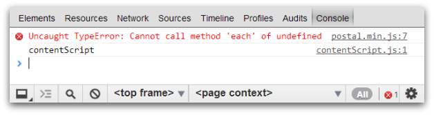
WHAT!?! I don't see any each method anywhere. What's up with that? Ohh man, it looks like the exception occurred in postal.min.js somewhere. FOUND A BUG... see if I use that library again. But, wait!?! Ohh, maybe something else is going on here. --Ficticious Internal Dialog
RequireJS Basics
Asynchronous Module Loader and the API it provides allows us to define and require modules.
RequireJS: define
// File Name: my-first-module.js
// The name of the module defaults to the name of the file by convention
define(
[ "underscore", "jquery" ], // Array of dependencies needed for this module
function( _, $ ) { // Callback with parameters matching dependencies requested
// Underscore and jQuery have both been loaded and are available for use with
// the `_` & `$` variables
return { // This will be available in callback of whoever requires this module
message: "Hello World!"
};
}
);
RequireJS: require
require(
[ "my-first-module" ], // Array of dependencies that are needed
function( firstModule ) { // Callback with parameters matching dependencies
console.log( firstModule.message );
}
);
Fixed Application: Markup
<!DOCTYPE html>
<html>
<head lang="en">
<meta charset="utf-8">
<title>Angry Birds</title>
<link rel="stylesheet" href="./css/style.css">
</head>
<body>
<script src="./libs/require.min.js" data-main="./js/main"></script>
</body>
</html>
Fixed Application: main.js
/* main.js */
// Let RequireJS know where all the scripts are
require.config({
paths: {
"jquery": "../libs/jquery.min",
"underscore": "../libs/underscore.min",
"postal": "../libs/postal.min"
},
shim: {
// Underscore.js doesn't know about AMD, so you have to shim it
underscore: {
exports: "_"
}
}
});
// The postal.js library internally defined that it needs the underscore library
// so RequireJS will load postal, which in turn will load its underscore
require([ "postal" ], function( postal ) {
var channel = postal.channel();
channel.subscribe( "pig.collide", function() {
console.log( "Pig Down!" );
});
channel.publish( "pig.collide" );
});
Optimize Application
- RequireJS already keeps a defined list of dependencies
- r.js will take those dependencies and combined & minify our scripts
Optimize Application: r.js
({
appDir: ".", // The main root URL
dir: "../dist", // Directory that we build to
mainConfigFile: "main.js", // Location of main.js
name: "main", // Name of the module that we are loading
optimizeCss: "standard", // Standard optimization for CSS
removeCombined: true, // Temporary combined files will be removed
paths : {
"jquery": "libs/jquery.min",
"underscore": "libs/underscore.min",
"postal": "libs/postal.min"
}
})
Optimize Application: r.js
$ r.js -o build.js
Optimizing (standard) CSS file: C:/Users/Elijah/Desktop/demo/dist/css/style.css
Tracing dependencies for: main
Uglifying file: C:/Users/Elijah/Desktop/demo/dist/build.js
Uglifying file: C:/Users/Elijah/Desktop/demo/dist/libs/jquery.min.js
Uglifying file: C:/Users/Elijah/Desktop/demo/dist/libs/postal.min.js
Uglifying file: C:/Users/Elijah/Desktop/demo/dist/libs/require.min.js
Uglifying file: C:/Users/Elijah/Desktop/demo/dist/libs/underscore.min.js
Uglifying file: C:/Users/Elijah/Desktop/demo/dist/main.js
Uglifying file: C:/Users/Elijah/Desktop/demo/dist/r.js
css/style.css
----------------
css/style.css
C:/Users/Elijah/Desktop/demo/src/main.js
----------------
C:/Users/Elijah/Desktop/demo/src/main.js
Black Bird!
→
Black Bird
Proves to be a much more organized approach to fighting these porkers and introduces the Backbone.js bomb to their dismay
What was Stolen by the Pigs?
The birds used to write their jQuery code like it was a tangled smorgasbord of worms. A Black Bird introduced the Backbone.js library and showed them a different way to think about developing front-end web applications
TANGLED SMORGASBORD OF WORMS
$( document ).on( "click", ".term", function( e ) {
e.preventDefault();
$( "input" ).val( $( this ).text() );
$( "button" ).trigger( "click" );
});
$( document ).ready( function() {
$( "button" ).on( "click", function( e ) {
var searchTerm = $( "input" ).val();
var url = "http://odata.netflix.com/Catalog/Titles?$filter=substringof('" +
escape( searchTerm ) + "',Name)&$callback=callback&$format=json";
$( ".help-block" ).html( function( index, html ) {
return e.originalEvent ? html + ", " + "<a href='#' class='term'>" +
searchTerm + "</a>" : html;
});
$.ajax({
dataType: "jsonp",
url: url,
jsonpCallback: "callback",
success: function( data ) {
var rows = [];
$.each( data.d.results, function( index, result ) {
var row = "";
if ( result.Rating && result.ReleaseYear ) {
row += "<td>" + result.Name + "</td>";
row += "<td>" + result.Rating + "</td>";
row += "<td>" + result.ReleaseYear + "</td>";
row = "<tr>" + row + "</tr>";
rows.push( row );
}
});
$( "table" ).show().find( "tbody" ).html( rows.join( "" ) );
}
});
e.preventDefault();
});
});
BACKBONE.JS BASICS
- Model - Represents data and logic surrounding it
- Collection - Ordered sets of Models
- View - A module backed by a Model with a render method
- Router - Mechanism to provide linkable, sharable URLs
- Event - Observer Eventing module
- History - Provides the ability to maintain history (back button support)
- Sync - Extendable component providing RESTful communication to the server
REFACTORING THE TIGHTLY COUPLED CODE
Let's take a stab at refactoring the above jQuery mess and use Backbone.js to split out some of the various concerns.
Refactor: RequireJS
require.config({
paths: {
jquery: "https://ajax.googleapis.com/ajax/libs/jquery/1.8.0/jquery.min",
underscore: "http://underscorejs.org/underscore",
backbone: "http://backbonejs.org/backbone",
postal: "http://cdnjs.cloudflare.com/ajax/libs/postal.js/0.8.2/postal.min",
bootstrap: "http://netdna.bootstrapcdn.com/twitter-bootstrap/2.2.0/js/bootstrap.min"
},
shim: {
underscore: {
exports: "_"
},
backbone: {
deps: [ "jquery", "underscore" ],
exports: "Backbone"
},
bootstrap: {
"deps" : [ "jquery" ]
}
}
});
require( [ "jquery", "search-view", "search", "movie-view", "movies" ],
function( $, SearchView, Search, MovieView, Movies ) {
$( document ).ready( function() {
var searchView = new SearchView({
el: $( "#search" ),
model: new Search()
});
var movieView = new MovieView({
el: $( "#output" ),
collection: new Movies()
});
});
});
Refactor: Search Model
define( [ "backbone", "channels" ], function( Backbone, channels ) {
var Model = Backbone.Model.extend({
initialize: function() {
this.on( "change:term", function( model, value ) {
channels.bus.publish( "search.term.changed", { term: value } );
});
}
});
return Model;
});
Refactor: Movie Model
define( [ "backbone" ], function( Backbone ) {
var Model = Backbone.Model.extend({
defaults: { term: "" },
parse: function( data, xhr ) {
return {
releaseYear: data.ReleaseYear,
rating: data.Rating,
name: data.Name
};
}
});
return Model;
});
Refactor: Movies Collection
define( [ "backbone", "movie" ], function( Backbone, Movie ) {
var Collection = Backbone.Collection.extend({
model: Movie,
url: function() {
return "http://odata.netflix.com/Catalog/Titles?$filter=substringof('" +
escape( this.term ) + "',Name)&$callback=callback&$format=json";
},
parse : function( data, xhr ) {
return data.d.results;
},
sync: function( method, model, options ) {
options.dataType = "jsonp";
options.jsonpCallback = "callback";
return Backbone.sync( method, model, options );
}
});
return Collection;
});
Refactor: SearchView View
define( [ "jquery", "backbone", "underscore", "channels" ],
function( $, Backbone ) {
var View = Backbone.View.extend({
events: {
"click button": "searchByInput",
"click .term": "searchByHistory"
},
initialize: function() {
this.model.on( "change", this.updateHistory, this );
this.model.on( "change", this.updateInput, this );
},
searchByInput: function( e ) {
e.preventDefault();
this.model.set( "term", this.$( "input" ).val() );
},
searchByHistory: function( e ) {
var text = $( e.target ).text();
this.model.set( "term", text );
},
updateHistory: function() {
var that = this;
this.$el.find( ".help-block" ).html( function(index, html) {
var term = that.model.get( "term" );
return ~html.indexOf( term ) ? html :
html + ", " + "" + term + "";
});
},
updateInput: function() {
this.$el.find( "input" ).val( this.model.get("term") );
}
});
return View;
});
Refactor: MovieView View
define( [ "jquery", "backbone", "underscore", "channels", "text!movie-template.html" ],
function( $, Backbone, _, channels, template ) {
var View = Backbone.View.extend({
template: _.template( template ),
initialize: function() {
var that = this;
_.bindAll( this, "render" );
channels.bus.subscribe( "search.term.changed", function( data ) {
that.collection.term = data.term;
that.collection.fetch({
success: that.render
});
});
},
render: function() {
var html = this.template({ movies: this.collection.toJSON() });
this.$el.show().find( "tbody" ).html( html );
}
});
return View;
});
Refactor: Movie Template
<% _.each( movies, function( movie ) { %>
<tr>
<td><%= movie.name %></td>
<td><%= movie.rating %></td>
<td><%= movie.releaseYear %></td>
</tr>
<% }); %>
White Bird!
→
White Bird
Appears to be seemingly harmless, but when it pulls out it's strict coding style and bursts of quality checks the hogs are sure to squeal
What was Stolen by the Pigs?
Each bird thought their coding standard was the "right way" and it started to become an issue. One day a wise White Bird came along and suggested that they come up with a common set of coding practices & tools to use.
JAVASCRIPT CODING STANDARDS
- A developer will be able to make sense of other code more quickly
- Merges in your code repository won't be as awful
- Having a standard will actually reduce defects
- The codebase will feel more unified
- Disagreements about who is "right" will lessen
- ... insert your benefit here ...
Which Standard Should I Follow?
- Douglas Crockford's Code Conventions for the JavaScript Programming Language
- Rich Waldron's (@rwaldron) Idiomatic.js - Principles of Writing Consistent, Idiomatic JavaScript ← Recommended
- jQuery's JavaScript Style Guide ← Recommended
- Google's JavaScript Style Guide
JAVASCRIPT LINTING: JSHint
- The use of === instead of ==
- Using variables that aren't defined
- Declaring variables that are never used
- Declaring functions inside of loops
- And lots more...
JAVASCRIPT LINTING: Recent Additions
- maxcomplexity - Maximum cyclomatic complexity
- maxstatements - Maximum number of statements allowed in a function
- maxparams - Maximum number of parameter allowed in a function
- maxdepth - Maximum depth allowed in a function
- maxlen - Maximum length of line in code
JSHint Example
/*jshint maxparams:3, maxdepth:2, maxstatements:5, maxcomplexity:3, maxlen:80 */
/*global console:false */
(function( undefined ) {
"use strict";
function test1( arg1, arg2, arg3, arg4 ) {
console.log( "too many parameters!" );
if ( arg1 === 1 ) {
console.log( arg1 );
if ( arg2 === 2 ) {
console.log( arg2 );
if( arg3 === 3 ) {
console.log( "too much nesting!" ); console.log( arg3 ); console.log( arg4 );
}
}
}
console.log( "too many statements!" );
}
test1( 1, 2, 3, 4 );
}());
JSHint Example
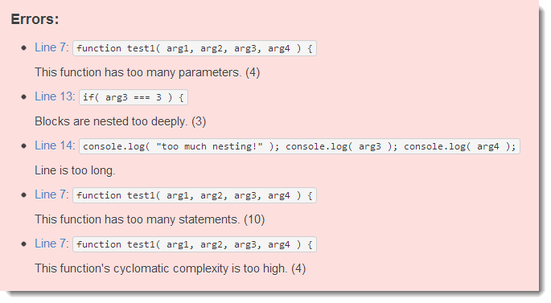
JAVASCRIPT ANALYSIS
Plato that will analyse your code and provide a visual report where you can view the complexity of your application.
JAVASCRIPT ANALYSIS: jQuery

JAVASCRIPT ANALYSIS: jQuery

Green Bird!
→
Green Bird
Can reach all of those hard to reach places and will mock and spy those stealing swine right where it hurts!
What was Stolen by the Pigs?
The birds have a symbiotic relationship with Water Buffalo (birds write front-end & buffalo writes back-end). A Green Bird proposed the idea of mocking.
The Twitter Application
The Twitter Application
(function( twitter, $, undefined ) {
var channel = twitter.channel = postal.channel(),
URL_TEMPLATE = "https://api.twitter.com/1/statuses/user_timeline/" +
"%(userName)s.json?count=%(count)s&include_rts=1",
$selection = null;
twitter.selector = null;
twitter.init = function( selector ) {
twitter.selector = selector;
channel.subscribe( "tweets.available", twitter.displayTweets );
};
twitter.displayTweets = function( tweets ) {
var $list = $( "<ul/ >" ),
$location = $selection || $( twitter.selector );
// This would be better suited for a templating engine,
// but that's for another Angry Bird ;)
$.each( tweets || {}, function( index, tweet ) {
var html = "<i>" + moment( tweet.created_at ).fromNow() + "</i>: ";
html += "<b>" + tweet.user.name + "</b> - ";
html += tweet.text;
html += tweet.retweeted ? " <i class='icon-repeat'></i>" : "";
html += tweet.favorited ? " <i class='icon-star'></i>" : "";
$( "<li />", { html: html }).appendTo( $list );
});
$location.append( $list.children() );
};
twitter.getTweets = function( userName, count ) {
var url = _.string.sprintf( URL_TEMPLATE, {
userName: userName,
count: count || 5
});
$.ajax({
url: url,
dataType: "jsonp",
success: function( tweets ) {
channel.publish( "tweets.available", tweets );
}
});
};
}( window.twitter = window.twitter || {}, jQuery ));
twitter.init( ".tweets" );
$( document ).on( "click", "button", function( e ) {
var $input = $( this ).closest( "form" ).find( "input" );
e.preventDefault();
twitter.getTweets( $input.val() || "elijahmanor" );
});
Real Data from Twitter
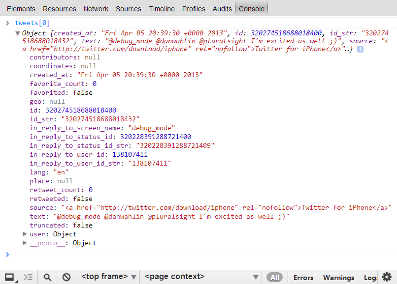
Introducing Mockjax
A library to mock jQuery Ajax requests
Mocking Static Data
$.mockjax({
url: "https://api.twitter.com/1/statuses/user_timeline/*",
responseTime: 750,
responseText: [
{ id: 0, created_at: "Mon Apr 11 8:00:00 +0000 2012", text: "Test Tweet 1",
favorited: false, retweeted: false, user: { name: "User 1" } },
{ id: 1, created_at: "Mon Apr 11 9:00:00 +0000 2012", text: "Test Tweet 2",
favorited: true, retweeted: true, user: { name: "User 2" } },
{ id: 2, created_at: "Mon Apr 11 10:00:00 +0000 2012", text: "Test Tweet 3",
favorited: false, retweeted: true, user: { name: "User 3" } },
{ id: 3, created_at: "Mon Apr 11 11:00:00 +0000 2012", text: "Test Tweet 4",
favorited: true, retweeted: false, user: { name: "User 4" } },
{ id: 4, created_at: "Mon Apr 11 12:00:00 +0000 2012", text: "Test Tweet 5",
favorited: true, retweeted: true, user: { name: "User 5" } }
]
});
Ultra-Boring Super-Static Mocked Data :(

Introducing mockJSON
A library to generated random data based on a template
MOCKING DYNAMIC SEMI-RANDOM DATA
$.mockjax({
url: "https://api.twitter.com/1/statuses/user_timeline/*",
responseTime: 750,
response: function() {
var data = $.mockJSON.generateFromTemplate({
"tweets|5-10": [{
"id|+1": 0,
"created_at": "Mon Apr 11 @TIME_HH:@TIME_MM:@TIME_SS +0000 2012",
"text": "@LOREM_IPSUM",
"favorited|0-1": false,
"retweeted|0-1": false,
"user": { "name": "@MALE_FIRST_NAME @LAST_NAME" }
}]
});
this.responseText = data.tweets;
}
});
Semi-Exciting Somewhat-Random Mocked Data! :)
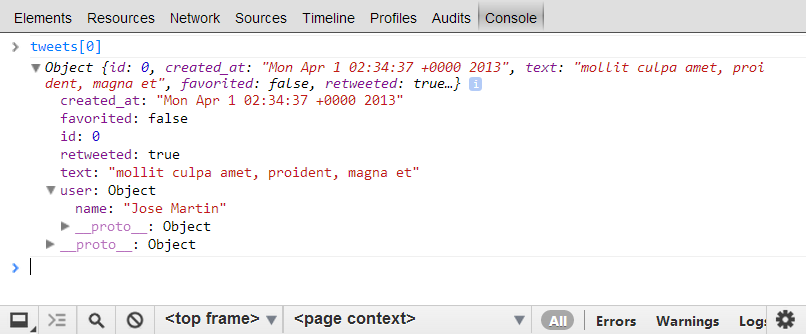
Orange Bird!
→
Orange Bird
Starts out small with a simple template, but then expands itself into a DOM blast that will surely send the message that the birds mean business
What was Stolen by the Pigs?
The birds found themselves using string concatenation to build up rich user interfaces, which resulted in a lot of code that was boring and also prone for errors. Thankfully an Orange Bird came along and introduced templating libraries such as Underscore.js and Handlebar.js.
WHY USE A TEMPLATING ENGINE?
(function( twitter, $, undefined ) {
var _selection;
twitter.init = function( $selection ) {
_selection = $selection;
};
twitter.displayTweets = function( tweets ) {
var $list = $( "<ul/ >" );
$.each( tweets || {}, function( index, tweet ) {
var html = "<i>" + moment( tweet.created_at ).fromNow() + "</i>: ";
html += "<b>" + tweet.user.name + "</b> - ";
html += "<span>" + tweet.text + "</span>";
html += tweet.retweeted ? " <i class='icon-repeat'></i>" : "";
html += tweet.favorited ? " <i class='icon-star'></i>" : "";
$( "<li />", { html: html }).appendTo( $list );
});
_selection.empty().append( $list.children() );
};
}( window.twitter = window.twitter || {}, jQuery ));
UNDERSCORE.JS: Take 1
twitter.displayTweets = function( tweets ) {
var templateString = $( "#tweets-underscore" ).html(),
template = _.template( templateString );
_selection.empty().append( template( { tweets: tweets } ) );
};
UNDERSCORE.JS: Take 1
<script id="tweets-underscore" type="text/template"> <ul> <% _.each( tweets, function( tweet ) { %> <li> <i><%= moment( tweet.created_at ).fromNow() %></i>: <b><%= tweet.user.name %></b> - <span><%= tweet.text %></span> <% if ( tweet.retweeted ) { %><i class="icon-repeat"></i><% } %> <% if ( tweet.favorited ) { %><i class="icon-star"></i><% } %> </li> <% }); %> </ul> </script>
UNDERSCORE.JS: Take 1

UNDERSCORE.JS: Take 2
twitter.displayTweets = function( tweets ) {
var templateString = $( "#tweets-underscore" ).html(),
template = _.template( templateString );
tweets = _.map( tweets, function( tweet ) {
tweet.created_at = moment( tweet.created_at ).fromNow();
return tweet;
});
_selection.empty().append( template( { tweets: tweets } ) );
};
UNDERSCORE.JS: Take 2
<script id="tweets-underscore" type="text/template"> <ul> <% _.each( tweets, function( tweet ) { %> <li> <i><%= tweet.created_at %></i>: <b><%= tweet.user.name %></b> - <span><%= tweet.text %></span> <% if ( tweet.retweeted ) { %><i class="icon-repeat"></i><% } %> <% if ( tweet.favorited ) { %><i class="icon-star"></i><% } %> </li> <% }); %> </ul> </script>
Why use Underscore.js? Pros
- You can stick arbitrary JavaScript in the template
- It is very small
- If you are already using Backbone.js then you have it
- If you are already using Underscore.js then you have it
- You can Compile the Templates
- Can Run on the Client and the Server
Why use Underscore.js? Cons
- You can stick arbitrary JavaScript in the template
- Doesn't have the concept of this in templates
HANDLEBARS.JS
twitter.init = function( $selection ) {
_selection = $selection;
Handlebars.registerHelper( "fromNow", function( time ) {
return moment( time ).fromNow();
});
};
twitter.displayTweets = function( tweets ) {
var templateString = $( "#tweets-handlebars" ).html(),
template = Handlebars.compile( templateString );
_selection.empty().append( template( tweets ) );
};
HANDLEBARS.JS
<script id="tweets-handlebars" type="text/x-handlebars-template"> <ul> {{#each this}} <li> <i>{{fromNow this.created_at}}</i>: <b>{{this.user.name}}</b> - <span>{{this.text}}</span> {{#if this.retweeted}}<i class="icon-repeat"></i>{{/if}} {{#if this.favorited}}<i class="icon-star"></i>{{/if}} </li> {{/each}} </ul> </script>
Precompiling Your Templates
- Compile the template on the server and include that on the front-end
- Reduce that amount of work needed on the front-end
- There is a trimmed down version of the handlebars runtime that you can use that has only the parts necessary needed to execute a template
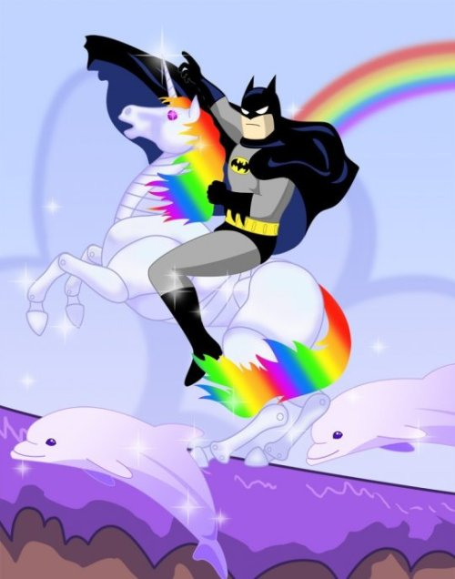
Why use Handlebars.js? Pros
- Its a Logic-less Template Engine
- You can Precompile Templates on the Server
- Supports Helper methods
- Can Run on the Client and the Server
- Supports the concept of this in templates
- It is a superset of Mustache.js
Why use Handlebars.js? Cons
- It might be slow???
- Can you think of any?
WHAT ABOUT OTHER TEMPLATING ENGINES?

Big Brother Bird!
→
Big Brother Bird
Pulls out the big guns with his finite state machine and other proven design patterns of destruction
What was Stolen by the Pigs?
The birds knew how to program, but they never had a common nomenclature that they all understood. Big Brother Bird came along and documented a set of common Design Patterns in a book lovingly known as the Gang of ./img/.
Gang of Fowl: Singleton
There can be only one!
Gang of Fowl: Singleton
var bird = {
type: "Red",
fly: function() {
console.log( "Weeeee!" );
},
destroy: function() {
console.log( "Hasta la vista, baby!" );
}
};
Gang of Fowl: Factory
A factory is a way to create new objects without actually using the new keyword. The idea is that there is something abstracted away from you in the factory method.
Gang of Fowl: Factory
var Bird = function() {};
Bird.factory = function( type ) {
var bird;
if ( typeof Bird[ type ] === "function" ) {
bird = new Bird[ type ]();
}
return bird;
};
Bird.Red = function() {};
Bird.Blue = function() {};
var redBird = Bird.factory( "Red" );
var blueBird = Bird.factor( "Blue" );
Gang of Fowl: Bridge
decouple an abstraction from its implementation so that the two can vary independently --http://en.wikipedia.org/wiki/Bridge_pattern
Gang of Fowl: Bridge - Before
// Not Bridged
var getUrl = function() {
var url = $( this ).attr( "href" );
$.ajax({
url: url,
success: function( data ) {
console.log( data );
}
});
};
$( "a.ajax" ).on( "click", getUrl );
Gang of Fowl: Bridge - After
// Bridged
var getUrl = function( url, callback ) {
$.ajax({
url: url,
success: function( data ) {
if ( callback ) { callback( data ); }
}
});
};
var getUrlBridge = function() {
var url = $( this ).attr( "href" );
getUrl( url, function( data ) {
console.log( data );
});
}
$( "a.ajax" ).on( "click", getUrlBridge );
Gang of Fowl: Facade
A facade is common place in front-end web development since there is so much cross-browser inconsistencies. A facade brings a common API to something that could vary under the covers.
Gang of Fowl: Bridge
// Facade
var addEvent = function( element, type, eventHandler ) {
if ( element.addEventListener ) {
element.addEventListener( type, eventHandler, false );
} else if ( elemement.attachEvent ) {
element.attachEvent( "on" + type, eventHandler );
}
};
Gang of Fowl: Adapter
An adapter is a nice way to massage one piece of code to work with another piece of code. This can be useful when you need to switch to another library, but can't afford to rewrite much of your code.
Gang of Fowl: Adapter
/*!
* jquery-win8-deferred - jQuery $.when that understands WinJS.promise
* version: 0.1
* author: appendTo, LLC
* copyright: 2012
* license: MIT (http://www.opensource.org/licenses/mit-license)
* date: Thu, 01 Nov 2012 07:38:13 GMT
*/
(function () {
var $when = $.when;
$.when = function () {
var args = Array.prototype.slice.call(arguments);
args = $.map(args, function (arg) {
if (arg instanceof WinJS.Promise) {
arg = $.Deferred(function (dfd) {
arg.then(
function complete() {
dfd.resolveWith(this, arguments);
}, function error() {
dfd.rejectWith(this, arguments);
}, function progress() {
dfd.notifyWith(this, arguments);
}
);
}).promise();
}
return arg;
});
return $when.apply(this, args);
};
}());
Gang of Fowl: Observer
We've covered the Observer pattern already in the Blue Bird past a while back in this series, but it is a powerful pattern that can help decouple various components. My recommendation is to use the postal.js library.
Gang of Fowl: Observer
var channel = postal.channel( "game" );
channel.subscribe( "bird.attack", function( data ) {
console.log( "Geronimo!" );
});
channel.subscribe( "pig.collide", function( impact ) {
if ( impact > 100 ) {
console.log( "AHHHHHHH!" );
}
});
channel.publish( "bird.attack", { angle: 45 } );
MANY MORE PATTERNS: Inheritance
There are several ways to implement inheritance in JavaScript. It is good to know some of these patterns as you create new objects in your application.
PATTERNS: Prototypal Inheritance
var bird = {
name: "Red Bird",
power: "",
getName: function() {
return this.name;
},
catapult: function() {
return this.name + " is catapulting with " + this.power;
}
};
var yellowBird = Object.create( bird );
yellowBird.name = "Yellow Bird";
yellowBird.power = "Speed";
console.log( yellowBird.catapult() ); //Yellow Bird is catapulting with Speed
PATTERNS: Pseudoclassical Ineritance
var Bird = function( name, power ) {
this.name = name + " Bird";
this.power = power || "";
};
Bird.prototype.getName = function() {
return this.name;
};
Bird.prototype.catapult = function() {
return this.getName() + " is catapulting with " + this.power;
};
var YellowBird = function() {
this.constructor.apply( this, arguments );
};
YellowBird.prototype = new Bird();
var yellowBird = new YellowBird( "Yellow", "Speed" );
yellowBird.getName = function() {
return "Super Awesome " + this.name;
};
console.log( yellowBird.catapult() ); //Super Awesome Yellow Bird is catapulting with Speed
PATTERNS: Chaining
var bird = {
catapult: function() {
console.log( "Yippeeeeee!" );
return this;
},
destroy: function() {
console.log( "That'll teach you... you dirty pig!" );
return this;
}
};
bird.catapult().destroy();
PATTERNS: Encapsulating
// IIFE
var yellowBird = (function() {
var superSecret = {
power: "Speed"
};
return {
type: "Red",
mood: "Angry",
goal: "Vengence"
}
}());
PATTERNS: Finite State Machine
var attackFsm = new machina.Fsm({
initialState: "idle",
states : {
"idle" : {
_onEnter: function() {
this.handle( "Zzzzzz" );
},
"bird.launch" : function( data ) {
console.log( "Weeeeee at " + data.angle + " degrees!" );
this.transition( "attacking" );
}
},
"attacking" : {
_onEnter: function() {
console.log( "Yay, hear me tweet!" );
},
"pig.destroyed" : function() {
this.transition( "victorious" );
},
"pig.alive" : function() {
this.transition( "defeated" );
}
},
"victorious": {
_onEnter: function() {
console.log( "Yay, we are victorious!" );
},
"game.restart": function() {
this.transition( "idle" );
},
"game.next": function() {
// Goto next level
this.transition( "idle" );
}
},
"defeated": {
_onEnter: function() {
console.log( "You may have won this time, but I'll be back!" );
},
"gmae.restart": function() {
this.transition( "idle" );
}
}
}
});
attackFsm.handle( "bird.launch", { angle: 45 } );
attackFsm.handle( "pig.destroyed" );
// Weeeeee at 45 degrees!
// Yay, hear me tweet!
// Yay, we are victorious!
Recommendation
In addition to learning these patterns I would recommend that you pick one of your favorite libraries and start to source dive into their repository.
ADDITIONAL RESOURCES
- JavaScript Design Patterns by Joe Zim (@JoeZimJS)
- Understanding Design Patterns in JavaScript by Tilo Mitra (@tilomitra)
- Learning JavaScript Design Patterns by Addy Osmani (@addyosmani)
- JS Patterns by Shi Chuan (@shichuan)
- JavaScript Patterns by Stoyan Stefanov (@xyz)
- JavaScript: The Good Parts by Douglas Crockford
Mighty Eagle!
→
Mighty Eagle
Uses the most superior weapon of them all, a suite of tools that can organize and deploy all the other birds into battle against their soon to be vanquished foe
What was Stolen by the Pigs?
Over time the birds picked up RequireJS (Yellow Bird), JSHint (White Bird), Plato, Mustache (Orange Bird), and a bunch of other great tools, but all of them required a command line task to complete. The Mighty Eagle introduced some tools to make things a little bit easier.
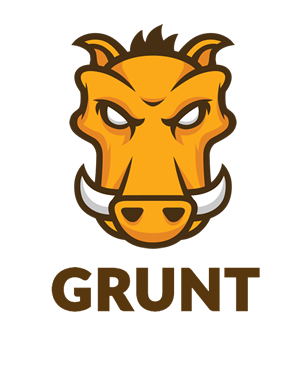
Grunt Basics
Once you've installed grunt you'll need 2 main things for each of your projects
- package.json - Describes your project's name, version, and any dependencies it might have such as grunt and any grunt plugins
- Gruntfile.js - JavaScript build file describing tasks
Grunt package.json
{
"name": "my-project-name",
"version": "0.1.0",
"devDependencies": {
"grunt": "~0.4.1",
"grunt-contrib-jshint": "~0.1.1",
"grunt-contrib-nodeunit": "~0.1.2"
}
}
Grunt Gruntfile.js
module.exports = function(grunt) {
// Project configuration.
grunt.initConfig({
pkg: grunt.file.readJSON('package.json'),
uglify: {
options: {
banner: '/*! <%= pkg.name %> <%= grunt.template.today("yyyy-mm-dd") %> */\n'
},
build: {
src: 'src/<%= pkg.name %>.js',
dest: 'build/<%= pkg.name %>.min.js'
}
}
});
// Load the plugin that provides the "uglify" task.
grunt.loadNpmTasks('grunt-contrib-uglify');
// Default task(s).
grunt.registerTask('default', ['uglify']);
};
Grunt Plugins
- contrib-coffee - Compile CoffeeScript files into JavaScript
- contrib-compass - Compile Compass into CSS
- contrib-concat - Concatenates files
- contrib-connect - Starts a connect web server
- contrib-csslint - Lints your CSS files
- contrib-handlebars - Precompiles your Handlebar tempaltes
- contrib-htmlmin - Minify your HTML markup
- contrib-imagemin - Minify PNG and JPEG images
- contrib-jshint - Validate files with JSHint
- contrib-less - Compile LESS to CSS
- contrib-nodeunit - Run Nodeunit unit test
- contrib-watch - Run predefined tasks when files change
- contrib-requirejs - Optimize RequireJS projects using r.js
- contrib-uglify - Minify files with UglifyJS
- contrib-yuidoc - Compile YUIDocs Documentation
- ... more ...
jQuery Gruntfile
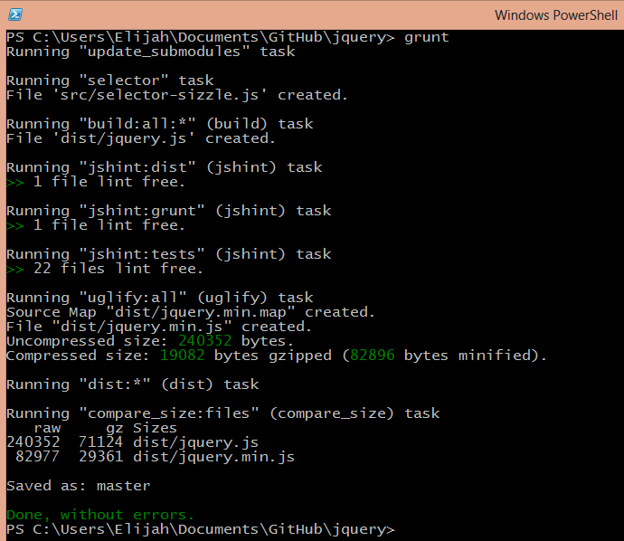
Modernizr Gruntfile
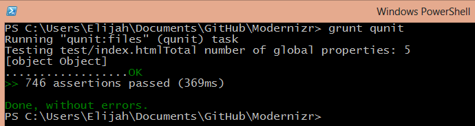
Twitter Bower: Install jQuery
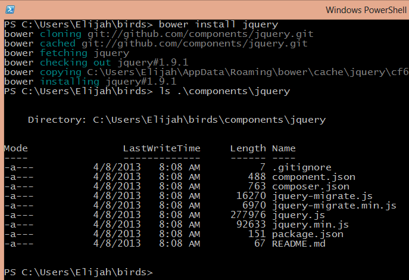
Yeoman: Install webapp
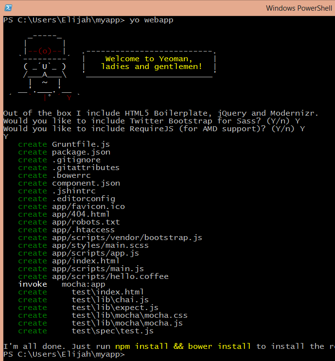
Yeoman: Install backbone:app
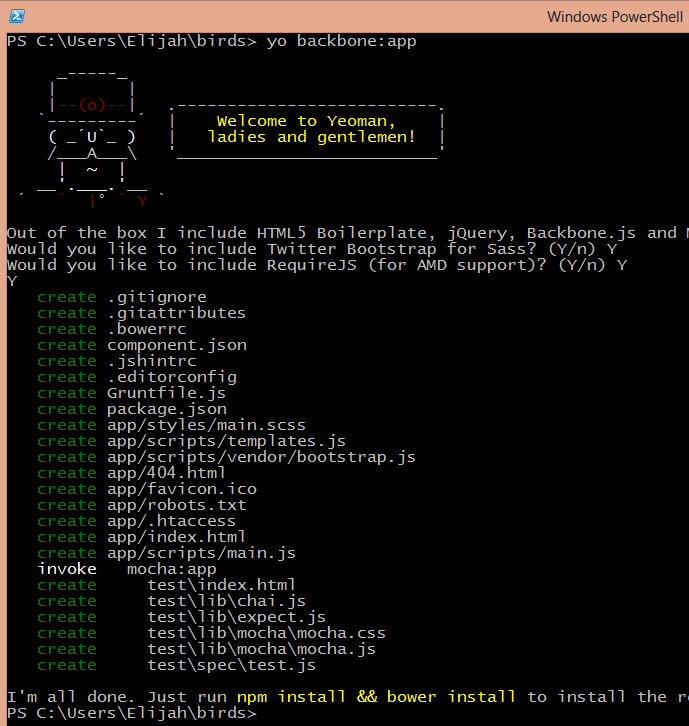
Yeoman: Install backbone:model
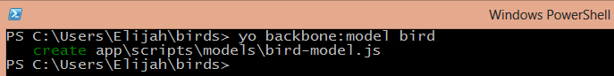
Victory!
→
VICTORY

Questions?
http://elijahmanor.com
@elijahmanor
elijahmanor@gmail.com
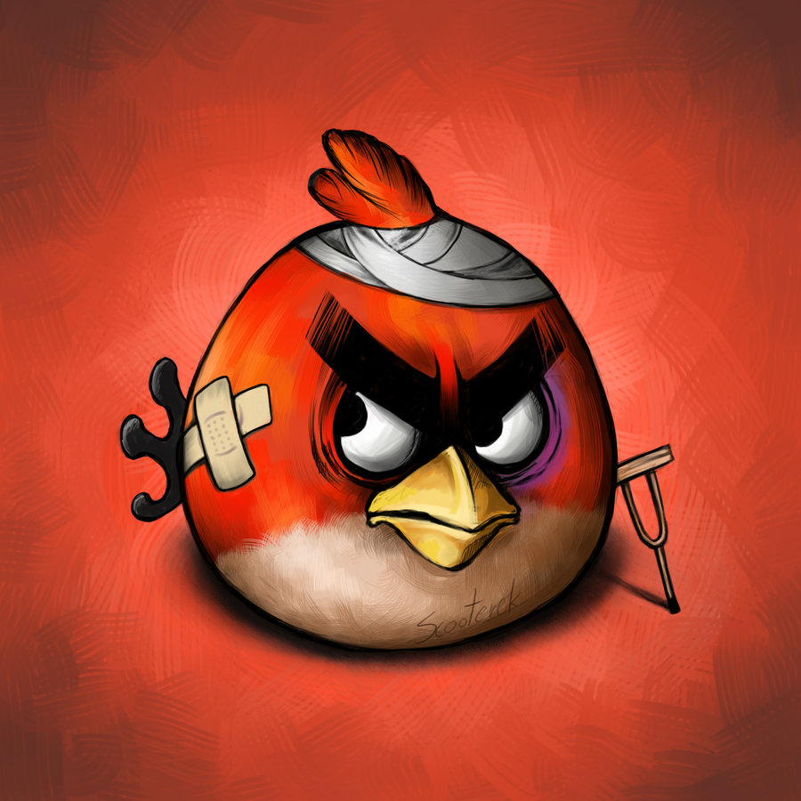
DISCLAIMER: No birds were hurt during this presentation...